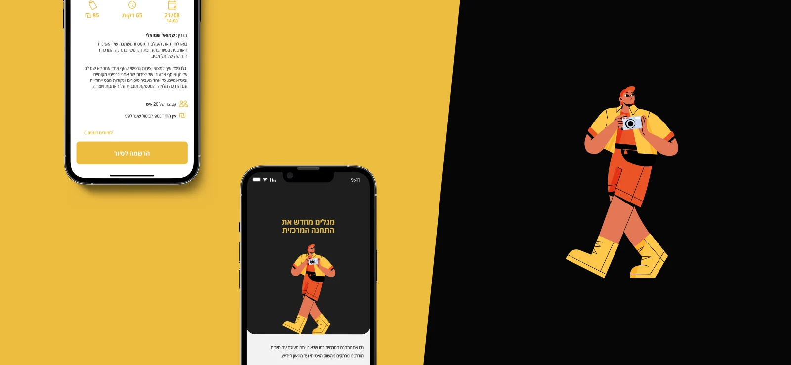

← Selected workAcademic concept
Hatachana
A complex place. A clear way in. An identity that invites people to explore.
The Central Bus Station is layered and overwhelming. This academic concept combines a distinct visual identity, character illustration and guided mobile flows to make discovery feel more approachable.
Self-initiated study — not a client project- Project
- Academic concept
- Scope
- Identity · UI · Illustration
- Focus
- Guided urban tours
- Place
- Tel Aviv Central Bus Station

01 The people make the place
Playful characters soften the industrial setting. A vivid yellow acts as a signal, with black and white creating a clear, direct framework around the illustrations.


Character illustrations
02 A little orientation, a lot to discover
The mobile experience connects registration, tour discovery and booking. The same colour and illustration language carries through the interface, keeping brand and digital experience connected.
Project 03 of 04← Marketplace Product Visuals
Next projectGive Me SambusakAcademic concept